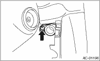
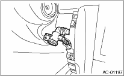
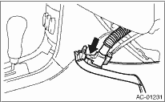

1. Disconnect the ground cable from the battery.
2. Remove the instrument panel lower cover. 
3. Remove the in-vehicle sensor from the instrument panel.

4. Disconnect the connector and aspirator hose.

CAUTION:
Be careful not to damage the sensors and interior trims when removing.
1. Disconnect the ground cable from the battery.
2. Remove the instrument panel lower cover.
3. Remove the in-vehicle sensor from the instrument panel lower cover.

4. Disconnect the connector and aspirator hose from the in-vehicle sensor.
CAUTION:
Be careful not to damage the sensors and interior trims when removing.